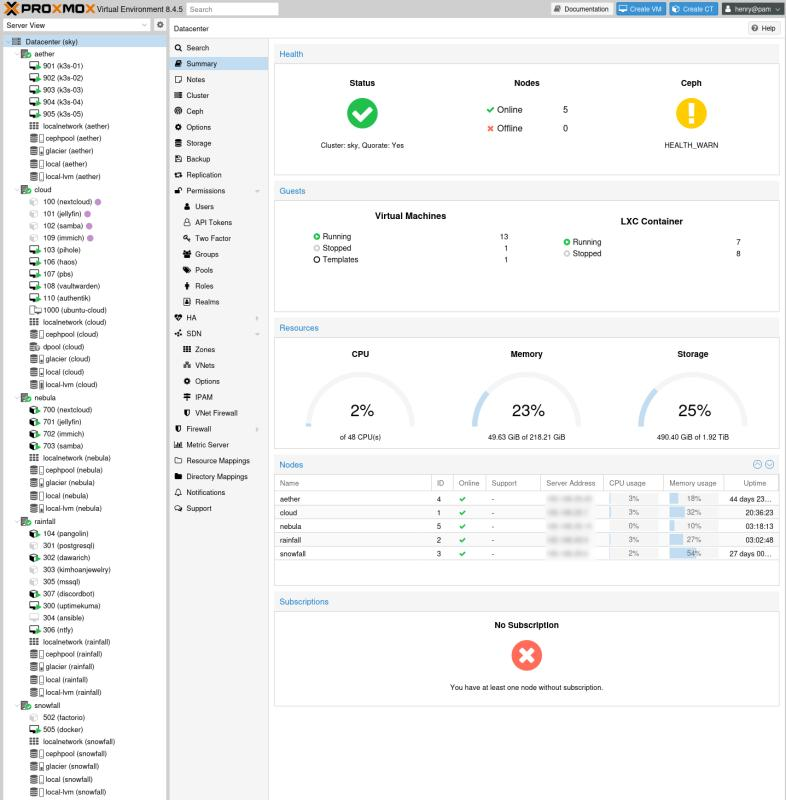
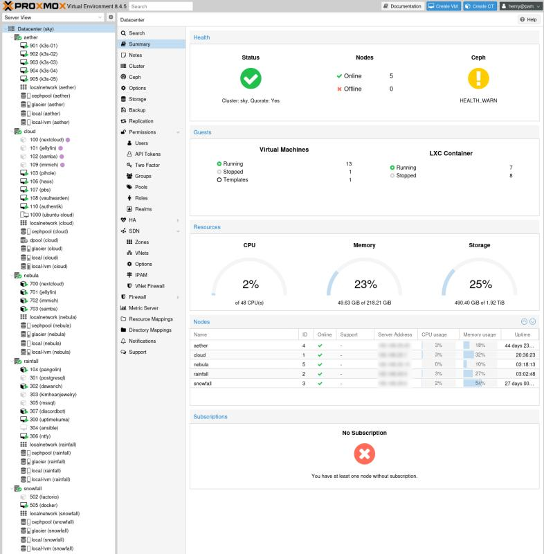

./about
henry_phan
IT_deskside_support
./experience --tree
./skills --list
languages
infrastructure
systems
tools
./projects --recent
5_node_proxmox_cluster
My goal with deploying a 5-node Proxmox cluster was to achieve high availability, workload optimization, centralized management, and scalability. I was seeking an increase in flexibility during operation while maintaining reliability because these services were crucial to my workflow. These 5 nodes are actively backed up through Proxmox Backup Server, which features deduplication and sync jobs, every hour and are remotely synced off-site every day. These nodes are all remotely accessible via Tailscale, allowing me to browse my local subnet securely from anywhere in the world. These host several services, which include several databases like Microsoft SQL and Postgres, Virtualized Kubernetes cluster, Nextcloud file storage server, Jellyfin media server, video game servers, network-attached storage, smart home assistants, identity provider for single sign-on, and various Docker containers. In addition, I have a VPS with a reverse proxy that tunnels to my homelab. This enables me to securely expose services over the Internet for friends and family to access. The reverse proxy utilizes SSO for IAM and is capable of load balancing when needed. This project enhanced my pre-existing knowledge of system and network administration and introduced me to services and features that I had never used previously. It also demonstrates my ability to design, deploy, and configure Linux servers that can handle real-world virtualization and containerization needs.

 

self_hosted_identity_federation
As my Homelab expanded, I needed a way to provision and manage accounts across dozens of services that I use and host daily. I built and deployed a self-hosted Identity Provider (IdP) using Authentik to centralize authentication and enable Single Sign-On (SSO) across multiple self-hosted services in my homelab environment. The goal was to simplify user authentication across services, improve access control and session management, and enhance security with centralized identity management. I set up SSO login flows, group-based access policies, and provisioning rules for seamless onboarding. This allowed me to enable MFA and account linking with pre-existing service users for non-disruptive integration and harden access through IP whitelisting, time-based access windows, and audit logging. This service is highly available with failover across 3 nodes. This project improved the usability and security of my infrastructure while reinforcing my skills in identity federation, access control, and zero-trust design principles.
custom_network_attached_storage_server
Designed and deployed a custom NAS (Network Attached Storage) server to meet the storage, backup, and media-hosting needs of a growing homelab environment and to offload the compute from my 3-node hyperconverged Ceph cluster. Built from the ground up using commodity hardware like the Jonsbo N2 and an ITX AM4 motherboard with an AMD Ryzen 7 5700G. Utilizing open-source software, the server provides a scalable, secure, and efficient storage solution for both personal and collaborative use. I configured Samba and NFS shares for seamless access across Windows, macOS, and Linux clients, and ZFS as the file system enables data protection and integrity with snapshot and scrub scheduling. This project strengthened my hands-on experience with server provisioning, data redundancy, self-hosting, and home networking which are all critical skills for IT infrastructure and DevOps roles.
./contact --info
github
git clone https://github.com/henryvx7
connect with henrythephan
docker hub
docker pull henryvx:latest